✂️ Szycie
Od podstaw obsługi maszyny po pierwsze własne projekty z tkanin.
Przejdź do zakładki →Spotkania artystyczne - strona pomocnicza. Wybierzcie zakładkę i sprawdźcie co jest na stanie.
Od podstaw obsługi maszyny po pierwsze własne projekty z tkanin.
Przejdź do zakładki →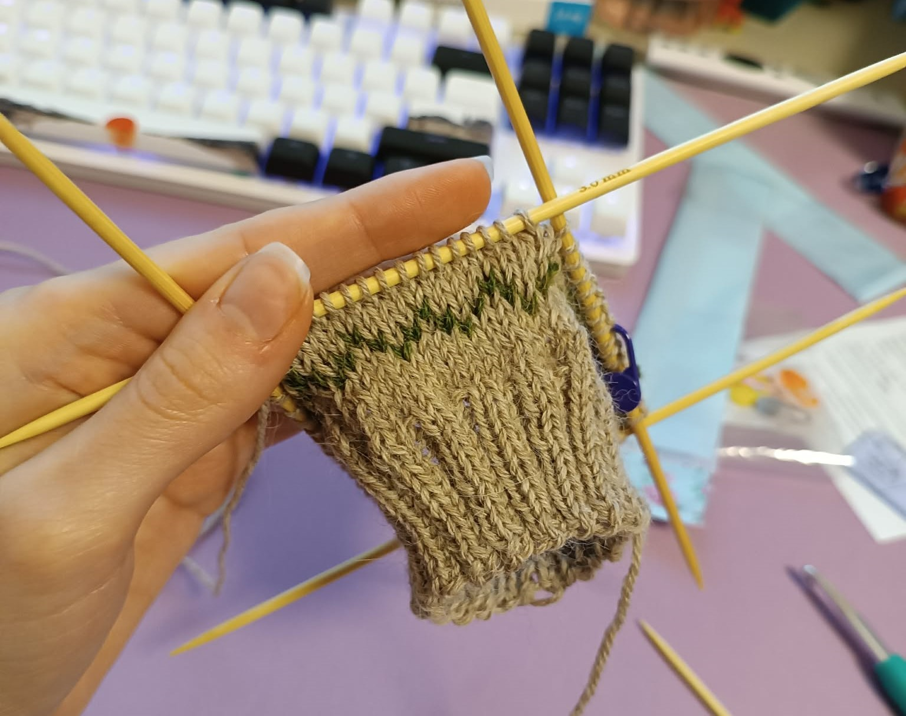
Druty, szydełko i włóczka — ciepłe projekty na spokojne wieczory.
Przejdź do zakładki →Praca z gliną, toczenie na kole i szkliwienie własnych naczyń.
Przejdź do zakładki →Kolorowe szkło, taśma miedziana i lutowanie własnych witraży.
Przejdź do zakładki →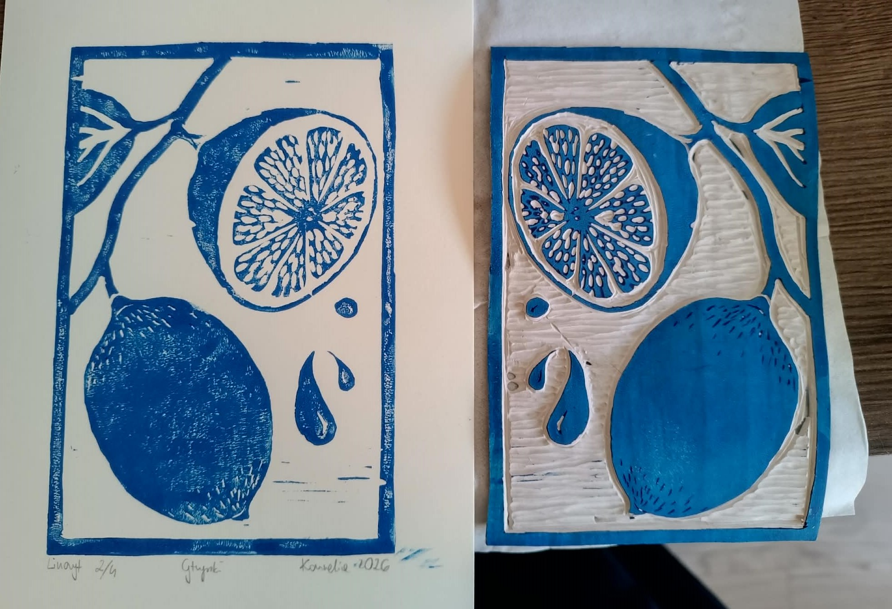
Odbitka wydłubanego linoleum
Przejdź do zakładki →Haft dla relaksu — ściegi ozdobne i kolorowe motywy w tamborku.
Przejdź do zakładki →Wprowadzenie do świata igły i nitki. Na zajęciach oswoimy maszynę do szycia, nauczymy się prowadzić prosty ścieg i uszyjemy pierwszy drobny projekt — od wykroju po gotowy element.
| Zdjęcie | Materiał | Ilość | Zapewniam |
|---|---|---|---|
| Tkanina bawełniana | 0,5 m | Tak | |
| Nici pasujące kolorem | 1 szpulka | Tak | |
| Igły do maszyny | komplet | Tak | |
| Nożyczki krawieckie | 1 szt. | Weź swoje | |
| Szpilki krawieckie | 20 szt. | Tak |
Babciacore - zrób swoją własną czapkę lub sweter.
| Zdjęcie | Materiał | Szacowany rozmiar drutów | Ilość | Zapewniam |
|---|---|---|---|---|
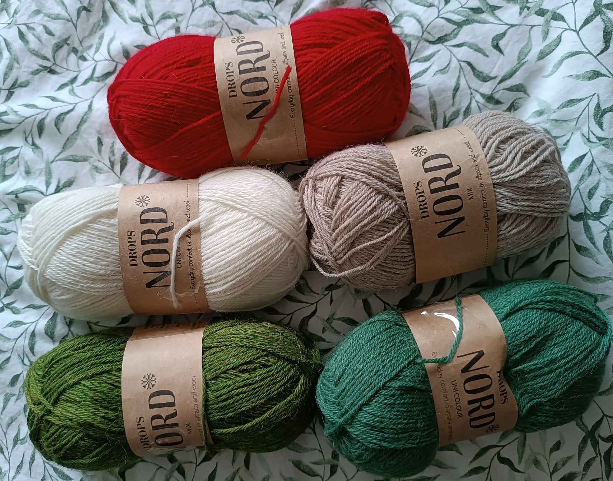 | Alpaka/Poliamid/Wełna | druty rozm. 3mm | napoczęte włóczki | Kornelia |
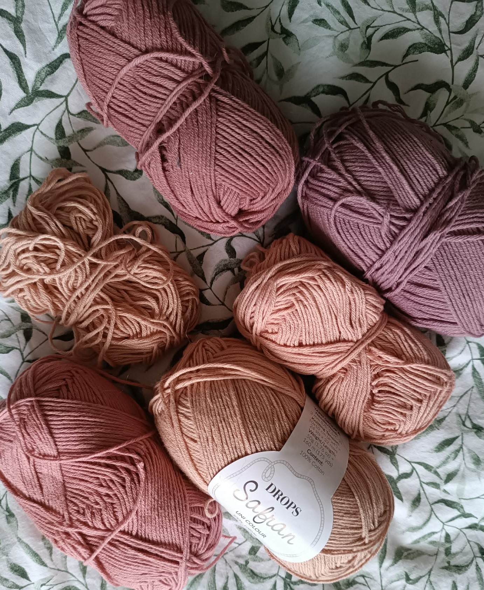 | Bawełna | druty rozm. 3mm | napoczęte włóczki | Kornelia |
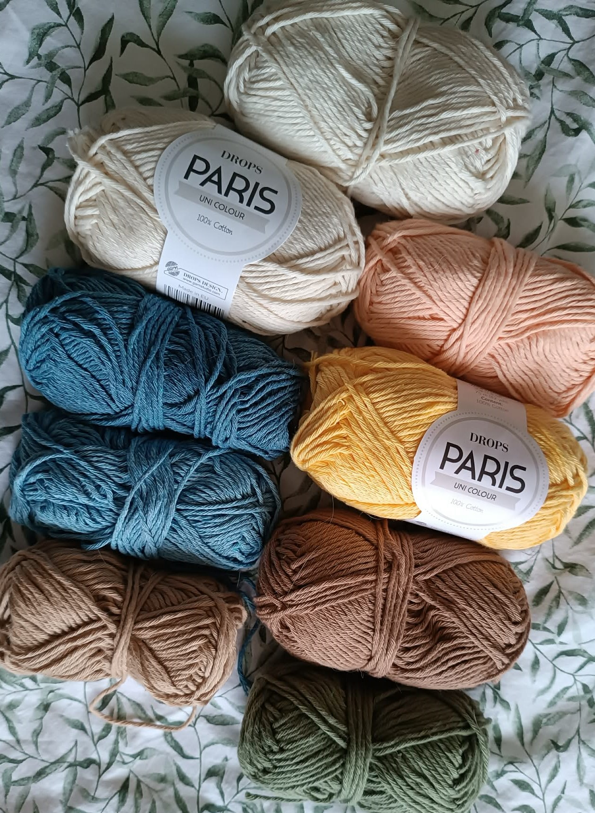 | Bawełna | druty rozm. 5mm | napoczęte włóczki/połowa | Kornelia |
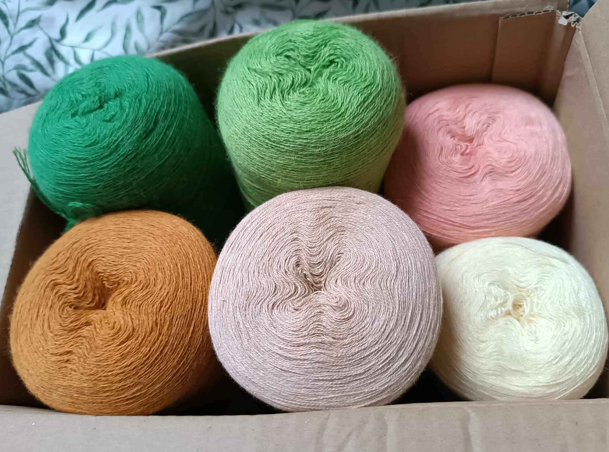 | Bawełna/Akryl | druty rozm. 3mm/4mm | napoczęte włóczki | Kornelia |
 | Wełna merino | druty rozm. 3mm | napoczęte włóczki | Kornelia |
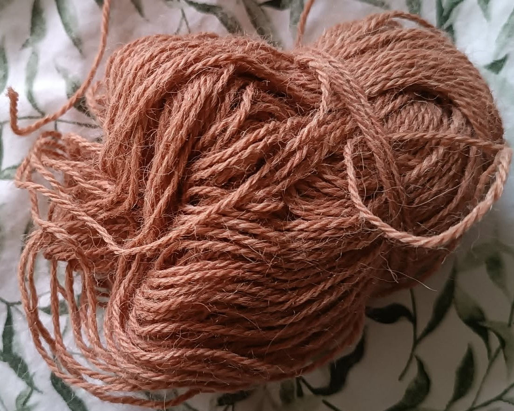 | Alpaka | druty rozm. 3mm | mało/pół włóczki | Kornelia |
 | Alpaka/Jedwab | druty rozm. 5mm | napoczęte włóczki | Kornelia |
 | Moher/Jedwab | druty rozm. 3,5mm | napoczęte włóczki | Kornelia |
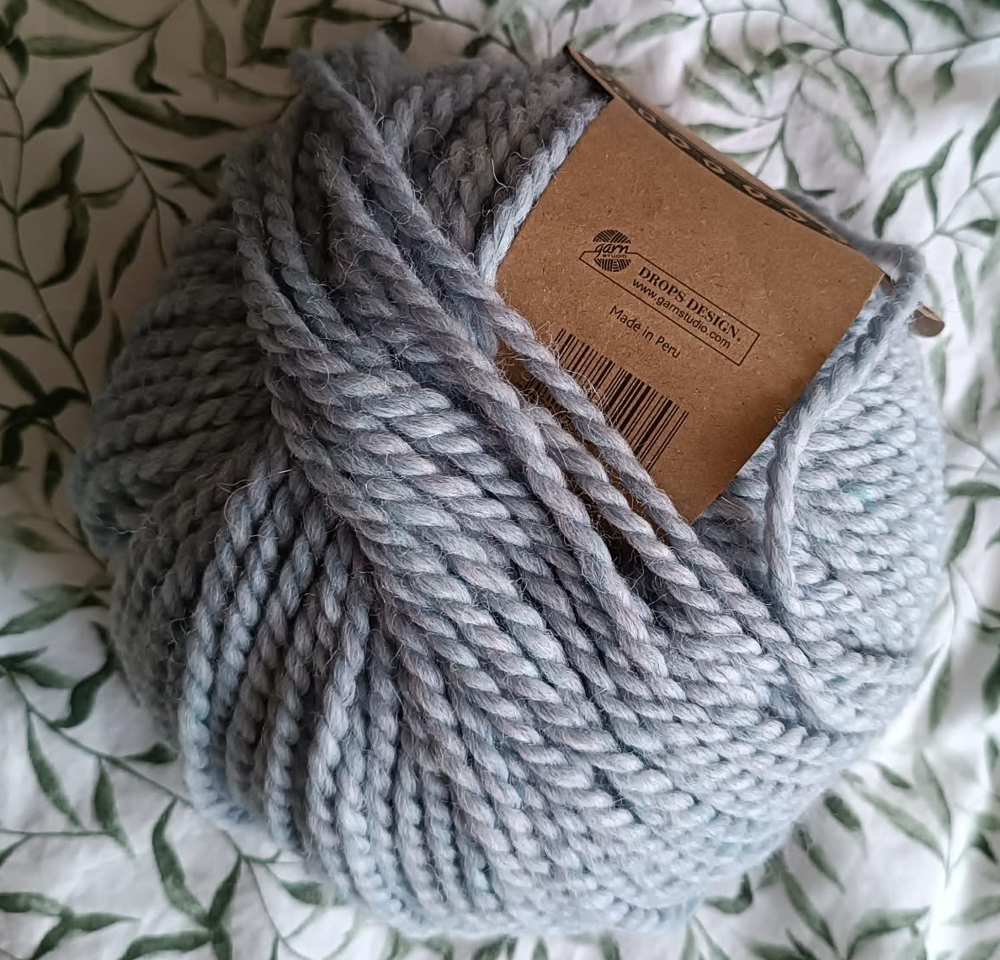 | Wełna/Alpaka | druty rozm. 9mm | cała | Kornelia |
| Zdjęcie | Materiał | Rozmiar | Zapewniam |
|---|---|---|---|
 | Druty wymienne | 3mm; 3,5mm; 4mm; 4,5mm; 5mm; 6,5mm; 7mm; 8mm; | Kornelia |
 | Druty na żyłce | 9mm; | Kornelia |
 | Druty skarpetkowe | 2,5mm; 3mm; | Kornelia |
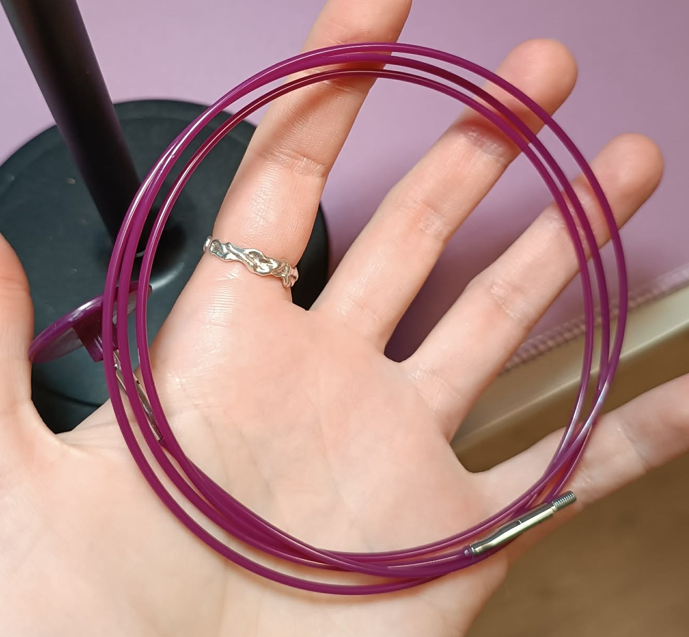 | Żyłka wymienna do drutów | 20cm; 40cm; 60cm;60cm obrotowe; 80cm;80cm obrotowe; 95cm; | Kornelia |
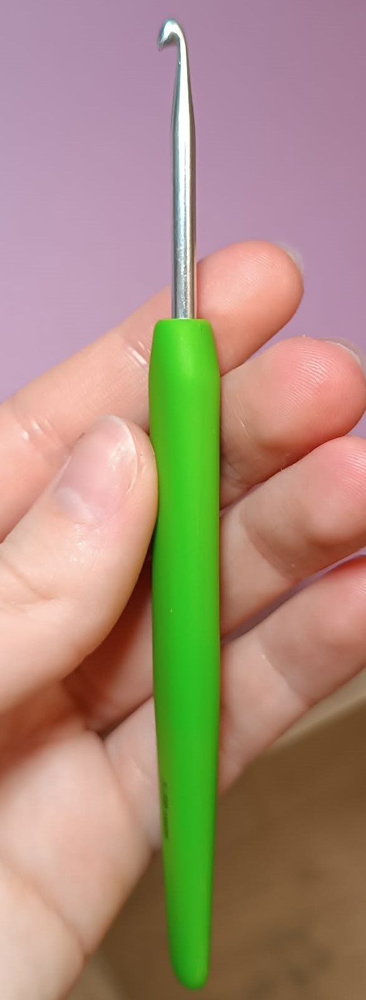 | Szydełko | 3,5mm; 5,5mm; | Kornelia |
 | Igła do dywanu | ?; | Kornelia |
Praca z gliną angażuje wszystkie zmysły. Nauczymy się wałkować i formować glinę, spróbujemy toczenia na kole garncarskim, a na kolejnym spotkaniu ozdobimy i oszkliwimy nasze naczynia.
| Zdjęcie | Materiał | Ilość | Zapewniam |
|---|---|---|---|
| Glina samoutwardzalna / do wypału | 1 kg | Tak | |
| Narzędzia do modelowania | komplet | Tak | |
| Szkliwo | wg projektu | Tak | |
| Fartuch ochronny | 1 szt. | Weź swój | |
| Dostęp do pieca / koła | — | Tak |
Sztuka układania kolorowego szkła. Poznamy technikę Tiffany'ego, nauczymy się ciąć szkło, oklejać je taśmą miedzianą i lutować własny witrażowy wisiorek lub niewielki obrazek.
| Zdjęcie | Materiał | Ilość | Zapewniam |
|---|---|---|---|
| Szkło witrażowe | kilka kolorów | Tak | |
| Nóż do szkła | 1 szt. | Tak | |
| Taśma miedziana | 1 rolka | Tak | |
| Lutownica i cyna | komplet | Tak | |
| Rękawice ochronne | 1 para | Weź swoje |
Grafika w technice linorytu. Rysujemy jakąś grafikę, odrysowujemy lub odbijamy na linorycie. Dłubiemy dłutem w linoleum a potem odbijamy na jakimś fajnym papierze. Grafika będzie lustrzana do tego co wydłubiemy.
| Zdjęcie | Materiał | Ilość | Zapewnia |
|---|---|---|---|
| Linoleum | 19x17,5 oraz 35x25, można pociąć | Kornelia | |
 | Dłuta do linoleum | V - 301, U-304 | Kornelia |
| Tacka i roller do farbowania | Roller 10cm | Kornelia | |
| Farba czarna | Cała | Kornelia | |
| Farba niebieska | Cała | Kornelia | |
| Farba czerwona | Cała | Kornelia | |
| Farba zielona | Cała | Kornelia | |
| Farba żółta | Cała | Kornelia | |
| Docisk drukarski | Chyba damy radę bez | BRAK |
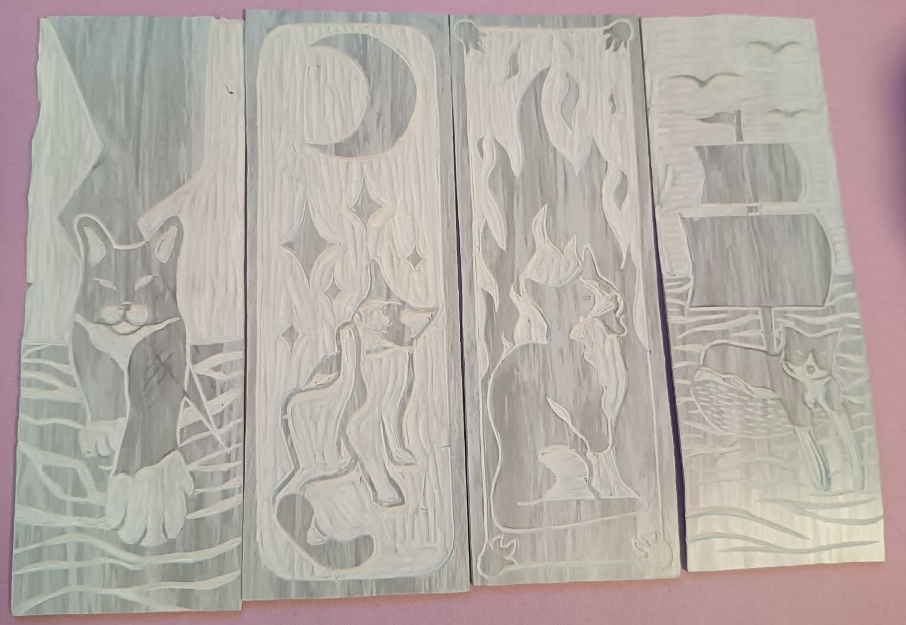
Haft dla relaksu i wyciszenia. Poznamy podstawowe ściegi ozdobne, nauczymy się przenosić wzór na tkaninę i wyhaftujemy własny kolorowy motyw naciągnięty w tamborku.
| Zdjęcie | Materiał | Ilość | Zapewniam |
|---|---|---|---|
| Kanwa / tkanina lniana | 1 kawałek | Tak | |
| Muliny (nici do haftu) | zestaw kolorów | Tak | |
| Tamborek | 1 szt. | Tak | |
| Igły do haftu | komplet | Tak | |
| Nożyczki do nici | 1 szt. | Weź swoje |